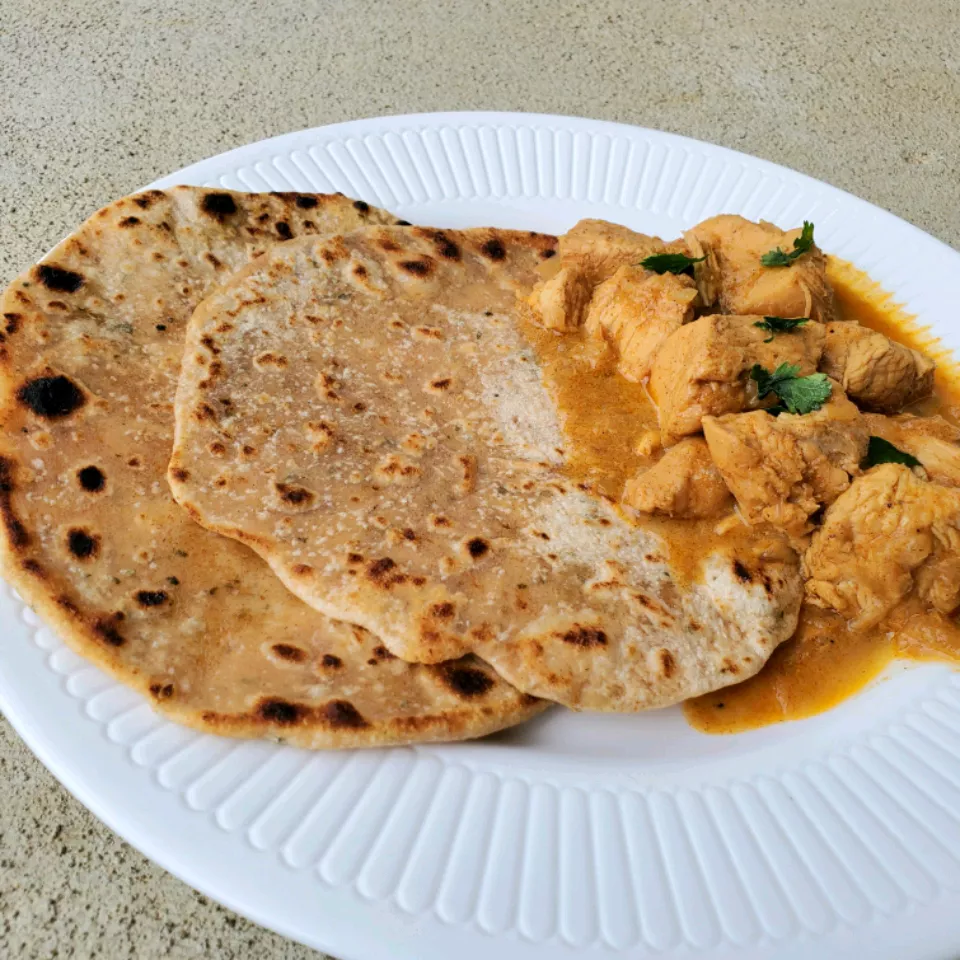

Ingredients
-
1 ½ cups all-purpose flour
-
½ cup whole wheat flour
-
1 teaspoon salt
-
1 tablespoon melted butter
-
1 teaspoon white sugar
-
½ teaspoon garlic powder
-
1 teaspoon dried mixed herbs
-
¾ cup water
-
oil for frying
Directions
- Step1: Mix all-purpose flour and whole wheat flour in a bowl. Sprinkle salt on top. Add
butter, sugar, garlic powder, and dried herbs. Mix together with your fingers. Pour water in
gradually; continue to mix by hand until a soft dough is formed.
- Step2: Knead dough until smooth and elastic, about 7 minutes. Cover with a damp cloth; let
rest for 30 minutes.
- Step3: Divide dough into 8 equal portions. Shape into smooth balls; lightly flatten. Dust
with flour and roll into thin circles about 1/16-inch thick and 7 inches in diameter.
- Step4: Heat oil in a large saucepan over medium heat. Fry each dough circle until golden, about 2
minutes per side. Drain on paper towels.
Editor's Note:
Use any dried herbs of your choosing. :)